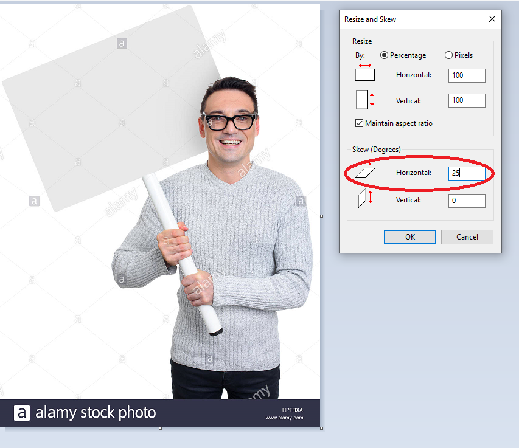
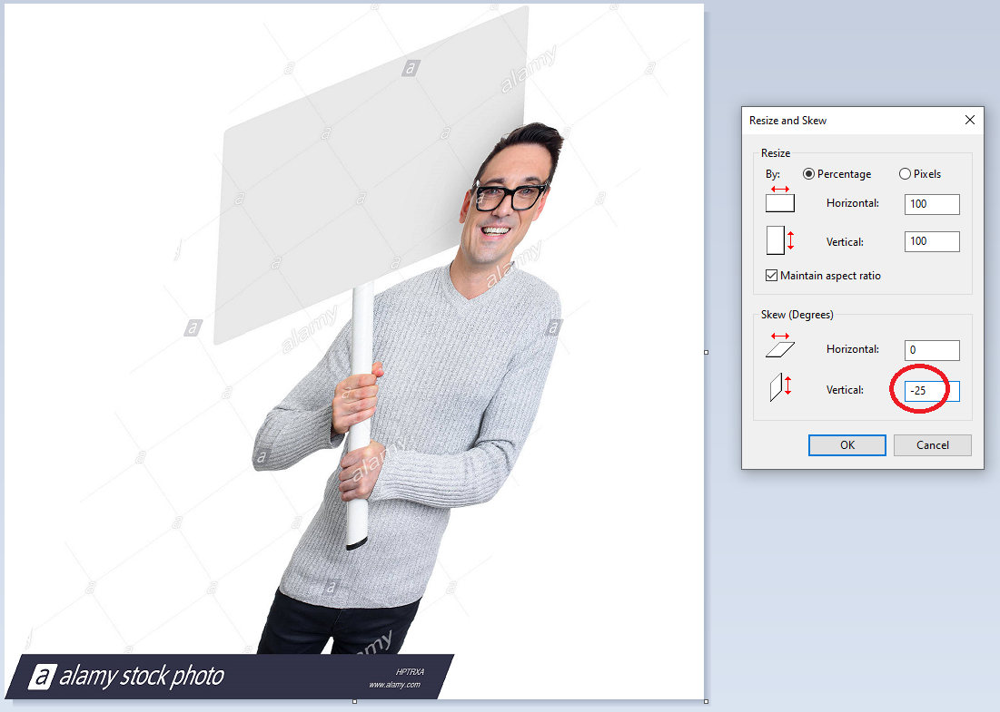
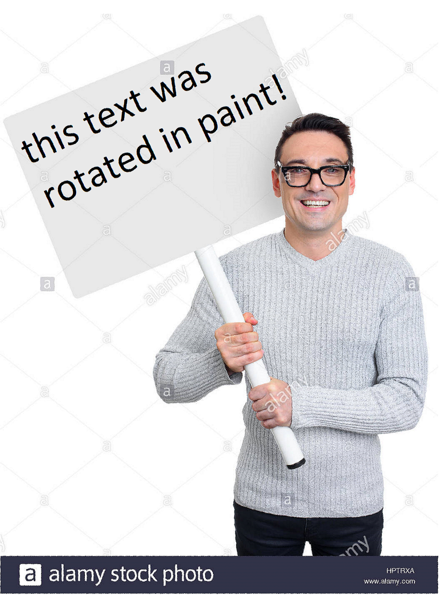

Actually rotating text in MS Paint
The classic meme is that it is impossible to rotate text in Microsoft Paint. Outside of flipping and 90 degree rotations, this seems to be true. However, here I will prove that statement wrong using math.
How to do it (explanation why is further down)
Let's start by trying to add rotated text to this guy's stock photo sign below. I'm going to guess that we need to rotate it about 25 degrees clockwise. The plan is to rotate the whole image, place the text with no rotation, and rotate it back.

First, do a horizontal skew on the image by the ultimate amount you want to rotate. 25 degrees in this case.
Now this step is slightly more complicated. Set the width to the original width of the image multiplied by the cosine of the angle. Set the height to the original height divided by the cosine of the angle. This step is really only to scale the width by the cosine and height by the secant of the angle. The reason we don't scale by percent is that Microsoft Paint only lets you scale by integer percents so precision is lost. Since this can be confusing, I've included a small helper below to calculate the new width and height of an image.
Original width:
Original height:
Angle:

This final step is easier than before. Just do a vertical scale by the negative angle of rotation.
Now put the text on:

And repeat these instructions but in reverse to get the final result:
Now for a few caveats. If your image is too large or too far from being a square, Microsoft Paint sometimes splices the image in a bizarre way when performing skews. Either resize or crop the image back to a smaller size or more square aspect ratio. Also, when rotating by an angle close to 90, such as 85 degrees, the extreme skewing will tend to lead to poor results. If you wish to rotate by such an angle, use the built-in feature to rotate first by 90 degrees and then rotate -5 degrees with this process.
Why it works
Since matrices can also represent linear transformations, rotations can be written in terms of matrix multiplication. While a rotation cannot be represented in Microsoft Paint, the program does have support for shearing and scaling. So, if a rotation matrix can be broken down into a bunch of shears and scales, then in theory MS Paint would be able to support rotating text.
Here is how a rotation can be represented as a matrix:
$$\begin{bmatrix} \cos\theta & -\sin\theta \\ \sin\theta & \cos\theta \end{bmatrix}$$In terms of linear transformations, the unit vector in the x direction gets mapped to the first column and the unit vector in the y direction gets mapped to the second column. If that doesn't mean much to you, then try watching the first three videos of 3blue1brown's essence of linear algebra series on YouTube. If I tried to explain how matrices are linear transformations, this would turn into a bad copy of his videos.
Now to try decomposing the rotation into a multiplication of triangular matrices. Since this matrix is only 2x2, it's a relatively straightforward process. To the second row, add the first row multiplied by $-\tan\theta$ to eliminate the number in the lower left corner:
$$\begin{bmatrix} 1 & 0 \\ -\tan\theta & 1 \end{bmatrix}\begin{bmatrix} \cos\theta & -\sin\theta \\ \sin\theta & \cos\theta \end{bmatrix} = \begin{bmatrix} 1\cdot\cos\theta + 0\cdot\sin\theta & 1\cdot(-\sin\theta) + 0\cdot\cos\theta \\ -\tan\theta\cdot\cos\theta + 1\cdot\sin\theta & (-\tan\theta)\cdot(-\sin\theta) + 1\cdot\cos\theta \end{bmatrix}$$ $$ = \begin{bmatrix} \cos\theta & -\sin\theta \\ 0 & \sec\theta \end{bmatrix}$$And the matrix is factored. It can be written as follows:
$$ \begin{bmatrix} \cos\theta & -\sin\theta \\ \sin\theta & \cos\theta \end{bmatrix}= \begin{bmatrix} 1 & 0 \\ \tan\theta & 1 \end{bmatrix}\begin{bmatrix} \cos\theta & -\sin\theta \\ 0 & \sec\theta \end{bmatrix}$$However, MS Paint can only do shearing and scaling, so we have to break up the right-hand matrix. But this is only as hard as factoring out a diagonal matrix from it.
$$ \begin{bmatrix} \cos\theta & -\sin\theta \\ \sin\theta & \cos\theta \end{bmatrix}= \begin{bmatrix} 1 & 0 \\ \tan\theta & 1 \end{bmatrix}\begin{bmatrix} \cos\theta & 0 \\ 0 & \sec\theta \end{bmatrix}\begin{bmatrix}1 & -\tan\theta \\ 0 & 1\end{bmatrix}$$The matrices with tangents in them happen to be the exact same transformation that MS Paint does when it performs a skew by a certain angle. So, reading the matrices right to left, to rotate an image, first perform a horizontal skew by the negative angle, then scale the x and y by the cosine and secant of the angle, and then perform vertical skew by the desired angle.
This small program below demonstrates what exactly is going on with the math. Drag the slider to visualize each step of the transformation.
Angle: